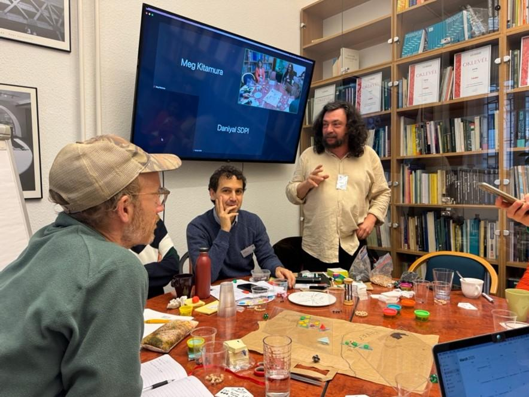
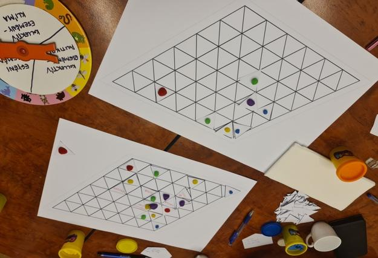
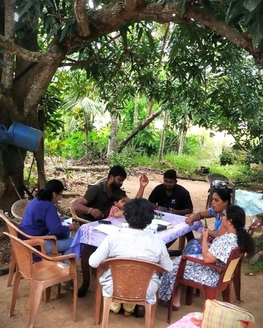

Le Grand Jeu
Experiments in playing the small game · Book II
Experiments in playing the small game · Book II
Book II · Experiments in playing the small game
Reports from the SPES workshops across seven countries
with the SPES research team
For the players — who showed up, rolled the dice,
argued the assemblies, and built, for a few hours at a time,
the societies they would rather live in.
This is Book II of the Le Grand Jeu rulebook series. Book I (Scenarios) collects open-source scenarios designed for use by game masters and players. Book II (Experiments) is a different animal — a collection of reports from real sessions of Le Grand Jeu played in the course of the SPES research project (Sustainability Performances, Evidence and Scenarios), a Horizon Europe project coordinated by the University of Florence between 2023 and 2025.
Between 2024 and 2025, the SPES research team ran citizen workshops in seven countries — Hungary, Italy, Kenya, the Netherlands, Norway, Pakistan, and Sri Lanka. Each workshop used a customised version of Le Grand Jeu as its core method, followed by a structured group discussion using the aspirations / problems / policy-solutions triad. The chapters in this book report what happened in the rooms where those sessions were played.
Two chapters — Pakistan and Norway — draw on the SPES Deliverable 8.4 (The transition from below: Aspirations, problems and policy solutions across the globe, Johansen et al., 2025) and the OsloMet national report (Johansen & Schøyen, 2025) respectively. The remaining country chapters draw on session reports, transcripts, photographs, and post-game interviews provided by the country research teams.
Responsibility for editorial framing in this volume rests with the editor. Errors, omissions, and misreadings are his alone.
SPES is funded by the European Union's Horizon Europe Programme under Grant Agreement No. 101094551. The views expressed here are those of the editor and the country research teams and do not necessarily reflect the official opinion of the European Commission.
This book is published under an open licence. See the project repository at github.com/freddbomba/legrandjeu-rulebook for source materials and the Le Grand Jeu project at large.
Typeset in A5 using the Book 1 design system.
Genoa, 2026.
Chapter I
Picture a dozen people gathered around a folding table in the Buurthuijs België, a neighbourhood centre in Amsterdam-Osdorp. On the table: two cardboard grids of triangular tiles, separated by a marked river. Bowls of coloured beans. A wheel of fortune. A Game Master is walking the participants through the premise.
The name is borrowed from the 19th-century Anglo-Russian contest over Central Asia — the original "Great Game," played by empires above the heads of the people who actually lived in the places being divided. Le Grand Jeu (LGJ) adopts the name with some irony: our players don't play the great powers. They play the people underneath.
This doubling — the macro game played to us, and the micro game we play to make a life inside it — is the beating heart of LGJ. And it is what made the game a natural fit when the SPES project went looking for a way to hear citizens speak about the sustainability transition in their own words.

SPES — Sustainability Performances, Evidence and Scenarios — was a Horizon Europe research project (2023–2025) coordinated by the University of Florence. Its question, stated plainly: how do ordinary people think about the transition to sustainable societies, and what do they want policy to do?
The project studied seven countries chosen to stretch the answer across very different realities: Hungary, Italy, the Netherlands, Norway in Europe; Kenya, Pakistan, and Sri Lanka across the Global South. Economies, governments, climates, and livelihoods differ enormously across these places — and so do the trade-offs participants see when they imagine a liveable future.
SPES wanted to do more than survey people. Surveys impose the researcher's framing from above; participants tick boxes that may not match the shape of their own thinking. What emerges can be statistically clean but hollow — missing the actual texture of how people reason about hard choices. The project set out to complement its quantitative work with something messier, slower, and truer: conversations in rooms, where people could argue with each other, change their minds, and surface concerns the researchers hadn't thought to ask about.
Traditional focus groups do some of this, but they come with their own hierarchies. The articulate dominate; the quiet defer. Experts pronounce; laypeople listen. Framing gets set by whoever speaks first.
Serious games — games designed not to entertain but to elicit, teach, or simulate — offer a different doorway. In a game, status gets flattened by the rules. Everyone has the same number of turns, the same dice, the same access to the board. Disagreements become moves rather than confrontations. People say things in character that they wouldn't say in their own voice.
LGJ suited SPES for three specific reasons, which we noticed consistently across all seven countries:
Out of the box, LGJ is a general-purpose world-building game that can run many scenarios. For SPES we built a specific one — shared across all seven countries, with local adaptations allowed.
The board is two modular grids of triangular tiles, separated by a river or sea, with a wilderness area beyond. Each grid represents connected territory — electricity, sewerage, roads, network, basic schooling. Land outside the grid is cheaper but has none of those services. Players choose where to place themselves: city, countryside, or off-grid.
Roles are chosen by the players themselves. Farmer, teacher, factory owner, student, spiritual guide — whatever makes sense to them. The choice itself is data: in rural Sri Lanka, no one chose to be a teacher; in Amsterdam, several players chose to play themselves.
Each round, players take actions: build a business, invent a technology, propose a law, form a partnership. Actions are resolved by a dice roll (how successful was the attempt?) and by discussion with the GM (what are the consequences?). Resources — counted in white beans — accumulate when things go well. Externalities — grey beans — accumulate when actions damage the shared environment.
The grey beans are the engine of the game. They're visible. They pool in a bowl in the middle of the table. When they cross a threshold (we used 50 points in SPES sessions), the society collapses — the game ends. This rule, introduced partway through every session, changes the mood instantly. As one Amsterdam player put it:
A wheel of fortune and a deck of event cards introduce shocks: a fire, a blackout, a pandemic, a migrant arriving, a death cult emerging. These events force collective response, and often reveal the shape of a group's politics more sharply than any deliberate prompt could.

After the game, a structured group conversation — facilitated using the SPES triad of Aspirations, Problems, Policy Solutions — gave participants a chance to connect what had just happened at the table to their own lives. Where possible, individual follow-up interviews deepened the record. This combination — game, group debrief, interviews — became the standard SPES workshop format.
Each country team adapted freely within this frame. Norway dropped the wheel. Sri Lanka customised the scoring. The Netherlands wrote new event cards for its context. What stayed constant was the intention: use the game to surface what people actually think, not what researchers expect them to.
The chapters that follow are reports from those rooms. They vary in style deliberately — formal session reports from Italy, informal notes from Hungary, a sequence of session accounts from the Netherlands, storybook-style vignettes from Kenya and Sri Lanka, thinner chapters for Pakistan and Norway drawn from the full SPES deliverable where we lacked primary session material. We haven't tried to flatten this variation. It is part of the record.
What unites them is something said much later in that Buurthuijs session, almost as an aside, in a moment that felt accidental at the time:
The big game and the small game are not separate universes. The people who hold office also wait at bus stops. The sustainability transition will be decided at both scales — and SPES bet, quietly, that the second scale matters more than the first usually gets credit for.
These chapters are seven attempts to find out what the people playing the small game are already thinking.
· · ·
Chapter II
The Firenze session was the first SPES game run in Italy. Four students — two in their early twenties, one in his late thirties, one in his mid-twenties — met at the university on an afternoon in March and played for three hours. Andrea and Toa, the GMs, opened with a short introduction to the SPES project and Work Package 8, then laid out the board: two grids, a river, a wilderness beyond, and the usual starting allocations of land, money, and a handful of externalities that each player carried in from round zero.
The group skewed serious. All four were studying development, sustainability, or cooperation. They read the game as an opportunity to think out loud about the things they already thought about, and it showed: almost every move in the session was justified in terms of social or environmental value rather than private return. The session also produced more infrastructure than any other SPES game on record — by the end of round four, the board held a school, an urgent-care clinic, a sports centre, a hydroelectric plant, a recycling centre, a research centre, a railway with a bridge, a green area run by a social cooperative, an organic-farming fund, a library of objects, a five-star hotel, an electric vehicle fleet, a migrant housing-and-training facility, an M&E unit, and a dam under construction.
The opening round set the tone. Each player picked a role and placed something on the board that was public, or at least public-serving.
The first player chose to be a teacher and founded a primary school in the peri-urban area. Mixed-age classes; the building stayed open after hours for extracurricular activities. The dice gave a modest 40 on the d100 — a slow start, but the school held.
The second player framed themselves as an entrepreneur and opened an urgent-care clinic for minor injuries — white and yellow codes only, with severe cases transported to the city. The need for a transport link would come up again two rounds later.
The third player, a retired flight instructor, invested two lands in a multi-purpose sports centre. Free to everyone. The stated purpose was to give young people something to do and steer them away from crime — a framing that reads as distinctly Italian, and that quietly anticipated the "social tensions" the group would flag in its own scoring discussion at the end of the round.
The fourth player — also an entrepreneur — built a hydroelectric plant on the river, reading its strong current as an energy resource. This was the session's first private-for-profit investment, and its first big success: a d100 of 80 delivered a generous yield.
The group voted their own social value for the round at 2 — not the maximum. They were already worrying that the sports centre and clinic might "create social tensions" depending on how they were run. The worry would recur throughout the session: good facilities do not automatically produce good societies. How you use them matters.
Round two is when the session found its character.
Three players expanded or added: a school bus to extend the school's reach, a public waste-collection and recycling centre in the urban area, a research centre funded through Italy's National Recovery and Resilience Plan (PNRR) with scholarships to draw students from out of town and an expectation that private investors would follow.
The fourth player called the session's first assembly. The proposal was ambitious: a train line between city and countryside, requiring a bridge, publicly funded. The GMs ruled the project would generate three externalities during construction but subtract six beans from the common pot per turn afterwards — a long-term environmental gain at a short-term cost of four chickpeas' maintenance per round.
The discussion was short but thorough. Would the line be long enough to actually replace commuting? Would the hydroelectric company supply its power? Should tourism — likely to increase — be welcomed or resisted? Players split on the last point and ultimately landed on "the benefits outweigh the disadvantages," though without enthusiasm. Unanimity was required; unanimity was granted. The railway was built.
The wheel was then spun for the first collective event. A drought.
What followed is one of the more interesting moments of the session. The GMs offered four possible responses at four different price points — public awareness at 2 chickpeas, targeted irrigation at 11, research-centre investment at 5, solar panels on the existing power plant at 12. The players, again requiring unanimity, chose only the cheapest option: public awareness. They debated the agricultural and technological responses seriously, but in the end they went with education.
There is an argument to be made that this was the Italian session's most revealing single decision. The cheapest intervention was also the one that required the least collective commitment and the least institutional risk. Four students who had just enthusiastically financed a railway flinched at a drought policy that would have cost them real chickpeas. The score ticked up by one to 3, but the round ended with a lighter wallet than the room felt comfortable spending.
Round three added texture.
The first player turned a patch of urban public land into a green area — playground, picnic space, greenhouses for research and student projects — and handed it to a social cooperative to manage. The second player, worried about the drought, set up a fund for organic farmers: own money, 40% of profits retained, 60% given back.
The third player called the second assembly. A library of objects in the city, to reduce consumption — an idea borrowed from existing ARCI Circles and municipal libraries, funded from the public pot. Four chickpeas. Unanimity again. Passed.
The fourth player, meanwhile, doubled down on private initiative and built a five-star luxury hotel in the urban area. Reasoning: the railway had reduced profits, the drought was ending, tourism would rebound. A helipad for emergencies was added in a flourish of post-hoc civic-mindedness.
The wheel was then spun for an individual event — and the fourth player drew a market crash. The electricity plant and the hotel both froze. The third player, sensing an opening, proposed a deal: "Could you donate part of the hotel to us? We'll sign an agreement to use the power plant for research, and external faculty can stay there." The fourth player declined. No deal. Both sides sat on stagnant assets for the rest of the round.
The score ticked up by another one. Total social value: 4.
By round four, the group was thinking in terms of systems rather than projects.
The first player called assembly three: convert the school bus fleet to electric vehicles, and use electric vehicles for the clinic-to-hospital transfers. Public-funded, with personnel costs covered by the player. A counter-proposal came back from the room: why stop there? Nationalise the electricity plant. Invest in renewable energy. Do both. The vote passed. The hydroelectric plant, built privately in round one, became public property in round four.
The second player called assembly four: housing for homeless people, including newly arrived migrants, funded publicly. The counter-proposal reframed the problem sharply: "Isn't it better to give them a job? Let's pay for their training courses. Not just a temporary solution, but a long-term one." The final decision combined both: housing and training in a single new facility. Six chickpeas. Four externalities removed. Unanimous.
The third player, now short on cash, borrowed from the fourth player — no interest — and called assembly five: create an operational unit for monitoring and evaluating development projects at the research centre. Six chickpeas, one chickpea per turn in maintenance, four beans removed from the pot. The M&E unit was established.
The fourth player, now without an electricity plant but still holding the railway, the bridge, and the hotel, tried one more move: planning a dam. No land left to build on, so they took out a loan to buy land, then mortgaged the hotel to fund the dam itself. The round ended before the dam could finish.
The final wheel spin delivered a Rural Infrastructure Act — a collective event that would expand the road network. The group responded by proposing protected rural zones, pedestrian pathways, and incentives for private electric vehicles.
The round closed at a social value of 6. Total beans accumulated: 36, well below the 50-point threshold at which society would have collapsed. One player had the most private wealth — 26 chickpeas and 13 beans — but, remarkably, no one had ever asked how to win the game. The question of individual victory had simply not arisen. The group had spent three hours playing as a community, not a collection of competitors.
The focus group ran 50 minutes after a short break. Andrea and Toa walked the group through the SPES triad of problems, aspirations, and policy solutions — the standard post-game frame used across all seven countries. The answers were condensed, articulate, and clearly rehearsed from a year of development-studies coursework.
The problems the group named were familiar: limited resources for social investment, entrepreneurs prioritising private profit over collective wellbeing, pollution, excessive tourism, traffic and inadequate public transport, homelessness, road expansion into rural areas, drought, student housing shortages, corruption.
Their aspirations were equally a map of what they had built on the board: renewable energy, education adapted to local (especially rural) contexts, guaranteed first-aid access, social cohesion through multipurpose centres and green public space, reuse and sharing through object libraries, eco-friendly and affordable public transport, public waste collection and recycling, research-and-development for sustainable solutions, incentives for eco-friendly private mobility, housing and training for migrants and people in poverty, redirection of public funds toward social and environmental priorities rather than private profit, and a strong turn toward public assemblies as the mechanism for deciding such things.
The thematic overlap between the game board and the focus group was almost exact. The Firenze players did not, by and large, play out positions they then renounced in the debrief; they played the society they said they wanted, and then told us what they had built.
Firenze is the cleanest SPES session on file. Four well-prepared students played an informed, collective, public-infrastructure-heavy game and produced a society with high social value and moderate externality accumulation. The decision-making was consistently collaborative; five assemblies were called in four rounds; unanimity was reached every time it was required.
What the session gains in coherence, it gives up in friction. No one played an adversary. No one tried to privatise a common good. The one player who built for profit accepted the nationalisation of their plant in round four without protest. It is difficult to tell, from this game alone, what would happen if the room had included — as later SPES sessions would — a farmer worried about their next harvest, a migrant worker negotiating entry, or a participant who did not already share the group's vocabulary of "externalities," "social cohesion," and "sustainable mobility."
What Firenze shows clearly is something else. Given a group of young people who already think structurally about sustainability, and a game that lets them act on that thinking, they build the society they have been trained to want. The drought decision suggests that even a prepared group will reach for the cheapest intervention when the group's own chickpeas are on the line. The unanimity requirement, more than any other rule, shaped what got built. And nobody, in three hours of earnest play, ever asked how to win.


· · ·
Chapter III
Budapest was the first SPES game. It was not a citizens' workshop. The players were members of the SPES research team itself — colleagues from Florence, Oslo, Amsterdam, and Budapest gathered at TÁRKI for a project meeting — taking the game for a test run before the country teams would deploy it in their own cities. Because some participants needed to leave early, the group split into small teams rather than individual players. A colleague joined remotely from Zoom as observer.
This matters for how the chapter should be read. The players already knew what SPES wanted to surface. They understood the mechanics before the first round. Several of them had helped design the SPES scenario. What the Budapest session gives us is not a sample of citizen reasoning — that would come later, in the workshops across the seven countries — but a portrait of how researchers, freed from their own questionnaires, chose to play the transition when no one was measuring them. It is the closest thing this book has to a rehearsal.
Two grids separated by a river, with a strip of off-grid land just beyond the right bank. The left grid held a forest; the right, a range of hills rising to a mountain. The usual infrastructure — electricity, road, sewerage, network, basic schooling — came with placement on the grid.
No framing questions were posed at the start. The GM did not ask the group to read the map as Hungary, or Budapest, or anywhere in particular. The board was allowed to stay generic, and the players filled it in as the session progressed — with, as it turned out, a specifically Hungarian grain.
The forest on the right grid became the first focus. One player took the role of a forester — a state official tasked with maintaining the woodland's ecological function. A small team formed a logging company that owned roughly forty per cent of the forested land. A third player chose to play an oracle: a spiritual guide rooted in the forest, placed there to keep it safe.
The triangle that emerged between these three roles — technical management, commercial extraction, spiritual stewardship — set the session's defining tension without the GM needing to prompt it. Every forest decision had to be negotiated across all three frames. None of the three had veto power, but each had standing. The result was slower, more argumentative play than the Italian or Dutch sessions, and a forest that survived the game largely intact.
Outside the forest, a player founded an AI startup focused on fixing infrastructure. The dice rolled a 90 — one of the highest success rolls in any SPES session on record — and the company took off. It remained a quiet presence for the rest of the game, generating income and occasionally nudging the group toward AI-mediated solutions that other players treated with mild suspicion.
The session's other major thread was the bridge. One of the teams had set up on the left grid with the explicit purpose of connecting to the right. The question of who would build the bridge, and on what terms, occupied the middle of the session.
The solution that emerged was structurally interesting: a public-private partnership in which the public pot (represented in-game as "LGJ") paid the construction costs in exchange for forty-nine per cent ownership, with the remaining fifty-one per cent and the construction work itself handled privately. The discussion then moved to how the bridge's revenue should flow — whether via local-government financing or via tolls paid by users. The question was debated at some length but never fully resolved before the session ran out of time.
An AI governance mechanism was formally established during the session — a rule permitting players to consult an AI arbiter when an assembly reached deadlock. In practice, the rule was almost never invoked. The players preferred to argue things out directly. The AI governance system existed on paper for most of the session as an insurance policy no one needed to call on.
The social score opened at −2 after the first round — a reflection of how much had been built on shared land with modest immediate benefit — and climbed to −1 by the end. The session never reached a point at which players felt their imagined society was doing well. Nor did it collapse.
The post-game conversation did not follow a formal debrief. It was a researchers' conversation about what they had just played, and it turned quickly to the specifically Hungarian resonances of the game.
Budapest is a short chapter because the session was short and the source material sparse. But it records something the longer chapters cannot: the moment at which the SPES scenario was first lifted off the page and played. The fact that the researchers, playing freely and without citizen-workshop framing, reproduced Hungarian political geography — the Buda/Pest division, the forest politics, the urban-rural gap, the energy contradiction — suggests that the game was already doing what it was designed to do. The scenario did not need to be set in Hungary to surface Hungarian concerns. The players brought those in with them.
In the months that followed, Hungarian researchers would run three citizen workshops in Budapest using the same scenario — two with tertiary-educated adults, one with eighteen-year-old secondary students. The findings are documented in the SPES Deliverable 8.4. What Budapest 28 November 2024 recorded, and what this chapter reports, is the rehearsal that preceded those workshops.

· · ·
Chapter IV
Amsterdam produced more SPES material than any other country. Four workshops were run over roughly six weeks, supplemented by a university-based preview session the weekend before the official programme began. The sessions were deliberately heterogeneous — in location, in the mix of participants, and in the style of the game masters — and the resulting record is the richest single body of gameplay from any SPES country. It is also the body of material from which the project's cross-cutting analytical frame, the "aspirations / problems / policy solutions" triad used across all seven countries, was most fully tested.
This chapter handles the five Amsterdam sessions in the order they happened. Each is described briefly in its own right; a cross-session synthesis follows at §VI.
The first table played in Amsterdam was a preview: a group of master's students, approached in class with two readings beforehand, who gathered on a Thursday afternoon at the university. The session was split across three tables to accommodate the numbers. Meg mastered one; two volunteers chosen from the student group mastered the others. Play ran from 14:30 to 17:00, followed by informal conversation at a bar.
The preview was not a formal workshop, but several patterns that recurred in the later sessions first appeared here. One table noticed their players clustering around concerns about the grey beans — the externalities — from before the game even started, suggesting that the Dutch participants had internalised the ecological framing and were prepared to take it seriously. The table built a mixed society — organic potato farm, local bar, affordable apartments, national park, windmill — with investments consistently justified in terms of societal contribution rather than personal gain. The group that emerged at the end was proudly green but lacked any mechanism for reducing externalities already in the pot, a frustration the later sessions would revisit repeatedly.
One small observation, recorded in the field notes, is worth keeping: students had crossed paths in class but hardly spoken to each other before the session, and the game became the first place they did. The Amsterdam workshops would, across their four formal iterations, keep doing this.
The first formal session was held at MKZ Café in the Eerste Schinkelstraat, a community kitchen that hosts a board-game night every week. The research team went to the board-game night and recruited six players on the spot: three women and three men, ages roughly from teenage years into the forties, a mix of students and academics, some Dutch-speaking, some English-speaking, one mixed couple raising children in Amsterdam. Play lasted two hours; individual follow-up interviews filled the third.
The session produced one of the cleanest arcs of the whole Amsterdam programme. In round one, five players set up in parallel — a permaculture farm off-grid (rolled a 40, not yet operational), a competing on-grid farm, a wheat and apple farm, a bakery that succeeded brilliantly, a vegetable farm. Cautious competition, not collaboration. In round two, the permaculture farmer added solar panels (subsidised by the government after a successful roll); another player pivoted the group toward composting as a way to cut externalities; a communication tower was built to connect the grid and the off-grid.
Round three introduced the event rule, and the dice delivered a disaster: a fire at the permaculture farm caused by faulty solar wiring. Five points of grey beans were added to the pot. The mood changed instantly. In the same round, the group introduced two laws — one to redistribute wealth between the richest and poorest player at the end of each turn, one to mandate everyone to attend a party at the end of each cycle because, as the proposer argued, "bad vibes also count as pollution." Both passed unanimously.
By the end of round four, the common pot of externalities was approaching the threshold of societal collapse (48 out of a maximum of 50). The group tried several responses — one player proposed shipping waste into space (rejected, strongly, as avoidance rather than solution), another proposed a research centre to find new waste-management techniques, a third shifted their brewery to a zero-waste process. As a final measure, the group voted to bury waste in a pit — unenthusiastically, knowing the decision was not a solution but a holding pattern.
The MKZ session's most striking feature was the group's moral clarity about what counted as a sustainable solution. Magical thinking — shipping waste to space, outsourcing the problem — was rejected forcefully. Real circular-economy mechanisms — composting, zero-waste brewing, redistribution — were embraced. The group was not large, but it was unusually decisive, and its decisions held the game together.
The UvA workshop filled a room in the Bijzondere Collecties building for three hours on a Thursday afternoon. Twelve participants arrived — students, artists, academics, several senior citizens, one participant's elderly parent. The group was split across two tables running in parallel, each master-led: Meg on one, Ines on the other. A common post-game discussion brought the two tables back together at the end.
Meg's table had five players: four women, two men, ages from thirties to sixties, a demographically older group than MKZ. Before the game began, the players stopped to ask a question the other sessions had not explicitly posed: "Is there already pollution in the city at the start?" The group deliberated, and decided they would play an already-affluent society that had inherited a polluted environment and needed to clean it up. This framing shaped the entire session.
In round one, one player founded a community centre where children would learn to coexist with nature; another opened a public school where learning would serve collective rather than individual good; a third opened a food bank in the city. Round two was interrupted by an event card: a death cult had emerged in the community. Rather than suppress it, the group went into business with the cult, proposing to use human ashes to regenerate the desolate soil at the edge of town — an early and unexpectedly elegant move toward circular thinking. A second event card placed a mega-shopping-centre at the town border. The group accepted it reluctantly, acknowledging the trade-off between the happiness it would bring and the pollution it would produce.
By round three, the session's tone had settled. A bike-share cooperative, a bicycle repair shop where children could learn mechanical skills, a social kitchen attached to the food bank — all passed with broad support. The discussion kept returning to a shared, almost unstated premise: small inclusive infrastructure was the right unit of intervention.
Ines's table had seven players: three women, four men, ages from twenties to sixties, a more mixed demographic with more novice gamers. One of the players — who volunteered to master the game in a turn-taking arrangement — set a markedly fair and transparent tone that the table remarked on repeatedly afterwards.
In round one, one player played a Dutch man directly — a dairy farmer living off-grid to avoid taxes, which the dice rolled as successful (70%). Another played themselves: a talented neuroscience student (100%). A herb farmer settled in the countryside (100%). A town bar opened for after-work decompression (70%). A hospital failed its first roll (60%) and entered the round with patients dying in the ER — a consequence the group would spend two rounds correcting.
In round two, a migrant arrived at the table — a new player who joined partway through the game, with less starting land than the others. Asked by the table what they wanted to do, the migrant player asked the town what was needed, and after discussion built a factory on the city's edge to provide means of production the town was missing. The placement was deliberate: at the edge, so the pollution would stay away from the centre. This moment — a migrant asking what the host community needed rather than announcing what they wanted — was one of the session's most striking, and it was resolved without friction.
Round three delivered a global blackout. The group calmly catalogued what they had — a farm with its own energy, a hospital whose patients were now in critical danger — and the migrant player built an energy grid linking the two. A windmill was added to reduce dependence on a single energy source; a hydro-option was considered and rejected on ecological grounds. When one player proposed building a space centre and shipping waste to space, the group pushed back hard, as the MKZ group had. The idea was dropped.
One law was proposed — mandatory community volunteering to support farms and nature reserves — and rejected by most of the table as "modern day slavery." The compromise was to allow the farmer to recruit volunteers on a voluntary basis. The table's appetite for rules, it turned out, was limited; consent and voluntariness were non-negotiable.
Both tables were brought together at the end of the afternoon to present their societies to each other. Meg's group gave themselves 2.5 out of 3 on the social-impact scale; Ines's group did the same. Each argued their scoring with the other's scoring in mind, and the patterns that emerged from the comparison are recorded in the cross-session synthesis below (§VI).
What emerged most clearly was a reflection on why the sessions had felt more constructive than real-world politics:
Radical transparency — being able to see the state of the shared environment, being able to see what others held — was identified, across both tables, as the single most important enabling condition. The players did not argue that radical transparency was easy to replicate in real life. They argued that its absence was the reason their real communities felt less solvable than their imagined one.
The fourth session was held at the Buurtcentrum Belgie in Osdorp, a mixed neighbourhood on Amsterdam's western periphery. This was the first Dutch session mastered by Federico, and the first played substantially in a mix of Dutch and English. The four players — an elderly citizen, a younger woman, a student, and a woman in her thirties who volunteered at the centre — had been recruited via a flyer and word of mouth directly at the buurtcentrum.
The Buurthuijs session differed from the university-based sessions in two obvious ways. The players were not particularly familiar with policy language, and the session ran more in storytelling mode than in policy-analysis mode. The GM spent longer on setup — roughly eleven minutes explaining the game — and the players took longer to find their feet. Once they did, the session played as strongly as any of the others.
In round one, the elderly player started a common vegetable garden (dice rolled 40, still in development); one player built a star observatory (70, success); another proposed a cultural centre in the city (70 for idea, but the dice on the city council's response came back as "yes in principle, no in funding" — an on-the-fly improvisation by the GM that the table enjoyed); the fourth planned a garden market selling farm products to the neighbourhood (dice rolled 10 — the GM ruled the market hit a regulatory dead-end, stuck in administrative limbo).
In round two, the entropy rule was introduced: fifty grey beans triggers societal collapse. One player pushed forward the vegetable market but was blocked again by missing regulation. Another tried for a bridge — rolled low, and the GM ruled the player could instead plea the city for the bridge. The group then debated bridge vs. boat ("a bridge is forever, a boat won't last"), settled on a low-impact bridge proposal with a successful roll, and named it "the people's bridge," tolls explicitly refused. Another player built a canal from the river to the gardens with a spectacularly low cost-per-triangle; the table remarked, amused, that the bridge and canal had made their imagined city "much more like Amsterdam." The fourth player built a garden house (90% — the highest roll of the session) for neighbourhood parties and children's birthdays.
By round three, the questions had shifted. "What is the scope of the game?" one player asked. Federico explained: the game is a way to talk about the future — to account for pollution, to think about infrastructure, to practise direct democracy in simple form. Another player asked whether the game could be purchased. The answer, with some regret, was no — but it could be downloaded and made at home. The players declined Federico's offer to hand the mastering over to one of them and asked him to keep mastering to the end.
Late in the session, midway through a conversation about policy actors, Federico offered a reflection that the transcription caught verbatim:
The remark was not planned. It emerged from the conversation. Buurthuijs Belgie was, in many ways, the session in which the big-game / small-game framing that opens this book stopped being a theoretical device and became a lived argument.
Across the four sessions and the preview, a set of patterns recurred clearly enough to warrant cross-session naming. We have borrowed the structure of the "aspirations / problems / policy solutions" triad used in the SPES analysis.
Aspirations — desirable futures and collective goals
Problems — barriers to the transition
Policy priorities and ideas
Four sessions across four weeks in four different parts of Amsterdam produced four different games. The MKZ group was decisive and morally clear; the UvA tables were reflective and transparent in a way that made the post-game debrief unusually productive; the Buurthuijs group was slower to start and arrived, by the end, at some of the most direct observations of the whole SPES programme.
What unites them is not a single Dutch perspective on the sustainability transition. It is a set of enabling conditions that Dutch players named, again and again, as the precondition for any real collective action. Radical transparency. Consensus. A trusted facilitator. Metrics that citizens can read. Public and mixed infrastructure over private extraction. Small inclusive institutions over monumental ones. Voluntariness rather than coercion, even when coercion would produce a faster result.
None of these enabling conditions is specifically Dutch. All of them are specifically absent, in various ways, from the policy environments the participants live in. The sessions did not just model a better future — they modelled the institutional infrastructure a better future would require, and named the places where current institutions fall short.
That naming, more than the content of any individual decision, is what Amsterdam contributed to SPES.


· · ·
Chapter V
Both Kenyan sessions were run in Nairobi, recruited through professional networks and snowball sampling. The ten participants across the two sessions spanned community-based organisations, public-sector professionals, and civil society leaders — a group that, in most cases, came to the game with direct personal experience of the frictions the SPES scenario was designed to surface. This chapter draws on Marion Ouma's session reporting and her thematic analysis of the post-game discussions.
What follows is not a round-by-round account. Kenya's material is less structured than the European session reports, but richer in the short, sharp observations players made about the specific texture of sustainability decisions in their country. The chapter is therefore organised around what the sessions surfaced — five themes that recurred across both games — with the moments that anchored each theme described in the players' own words where possible.
The defining tension of both Kenyan sessions was the gap between what players said they wanted for their society and what they played for as individuals.
In the first session, a player chose to be a farmer and left part of his urban land idle — the plan was to sell it later at a profit when land values rose. Other players challenged him almost immediately. What about food security? The farmer's justification was not that food security didn't matter; it was that his own household's security came first. The exchange sparked a wider reflection that ran through both sessions: in the words of one participant, Kenya's real challenge "lies not in ideas but in priorities — profit before people, individual before community."
This pattern was not read by players as a moral failing. It was read as a rational response to a thin social safety net. With state provision of social services limited and much of the workforce in informal and precarious jobs, accumulation becomes the household's own insurance. The urgency of private survival crowds out the possibility of collective ambition — even when collective ambition is what everyone at the table says they want.
The game made this visible in a way that surveys cannot. Both sessions included participants who, when asked abstractly, placed a high value on sustainability and social cohesion; both sessions also included participants — sometimes the same ones — who, when placing their first tokens on the board, reached for individual enterprises and income-generating activities before anything else.
In both games, the players who invested earliest in reforestation, biogas, and recycling were the younger ones. The players who leaned toward conventional business and profit-making were, on average, older. This pattern recurred in the role choices, in the direction of proposals at assemblies, and in the substance of the post-game discussion.
A young player, late in the second session, summarised her frustration: "We need to think of the next generation." The older player she was responding to did not disagree — but pointed out, reasonably, that the generation now in its fifties and sixties had been required by circumstance to think first of their generation, with limited help from the state, and could not be expected to suddenly play differently.
What the younger players seemed to bring to the table was exposure. Several referenced online debates, social-media conversations, and formal education on climate and sustainability. Several had explicit vocabularies — intergenerational equity, circular economy, just transition — that older players did not. Whether this exposure translates, in real life, into changed behaviour is another question. What the sessions showed clearly is that a vocabulary of sustainability now exists in Kenyan youth in a way it does not yet exist in Kenyan policy.
One player in the first session launched a recycling plant to clean up the plastic waste produced by a neighbouring bakery. The table applauded — until another player pointed out that "young people might start dropping out of school to collect waste for money."
The conversation that followed was one of the session's most revealing. The problem was not with recycling itself. The problem was with what a green solution would do, in a context where education is expensive and households are under economic stress, to the incentives around children's labour. A policy that looks straightforwardly positive in an affluent European context ("introduce recycling!") operates very differently in an economy where informal waste-collection already exists as a livelihood for children out of school. The green solution could easily reinforce the problem it was supposed to address.
This theme — that sustainability policy in Kenya must protect education, dignity, and livelihoods, and cannot be assumed to do so automatically — was one of the session's core policy observations. It is also one of the points that the SPES analytical framework, built largely around European concerns, had the most difficulty absorbing.
When the flood scenario was introduced in the second session, the mood of the room changed. Players began pooling money to help affected families, planning gabions, discussing drainage systems. In the middle of the conversation, one player said what several of them were thinking: "We always wait for disaster before we act."
The remark became a metaphor. The group recognised, and then spent some time discussing, that much of Kenyan environmental policy operates in the same register — reactive rather than preventive, crisis-driven rather than planned. The flood card was not a Kenya-specific event, but its reception in the second session was. What European groups treated as a test of emergency coordination, Kenyan groups treated as a familiar pattern requiring commentary rather than simulation.
A related observation emerged about education. The group noted that the Kenyan school curriculum does not encourage innovative thinking about environmental degradation or sustainability — it teaches compliance with existing rules rather than invention of new ones. Proactive measures require a different kind of civic imagination, and the education system as currently designed does not build it.
One of the session's moments of laughter came from a player who complained, only half in jest, about "invisible taxes" — local officials and intermediaries demanding payments outside the formal tax system, especially when a new enterprise begins to succeed. "Even if you recycle," another player added, "they will still find a way to charge you."
Humour notwithstanding, this was a serious point. Kenya's formal tax system — which players also criticised for over-taxing environmentally friendly imports like solar components — is only part of the cost that a small entrepreneur faces. The informal extraction that happens alongside the formal system is a real disincentive to innovation, and particularly to green innovation, which often requires higher upfront investment and a longer horizon for returns.
The policy recommendation that emerged across both sessions was that government could meaningfully shift behaviour with incentives — tax rebates on imports that enable sustainable practice, reduced VAT on solar equipment, grants for circular-economy ventures — but that these incentives would only be effective if accompanied by enforcement against the informal taxation that currently eats into every entrepreneur's margin.
A player in the second session reflected that Kenya's environmental crisis was also a cultural one. "We've left our traditional ways of doing things," he said. "There is imposition by rich people and politicians who have their way." The others nodded.
The remark surfaces something the SPES framework's policy-economic vocabulary has trouble capturing. What the player was pointing to was a pre-modern governance of land and resource use — community norms, seasonal practices, mutual obligations around shared commons — that has been steadily displaced, first by colonial administration and then by commercial pressures, and that remains, in rural Kenya, a live memory rather than a historical artifact. Sustainability policy, in this frame, is not only the introduction of new, better practices. It is also, sometimes, the reintroduction or protection of older ones.
The nostalgia was not uncritical. No player at either table suggested that Kenya should simply return to pre-colonial land governance. But several argued that contemporary sustainability policy in Kenya ignores, at its own cost, what communities already know about living on the land they live on.
At the end of one session, the group stepped back to look at what they had built across their rounds. Clean water systems. Shared infrastructure. Trees planted. Active community assemblies where real trade-offs had been negotiated with real consequences on the board. The board showed a society the players said they would want to live in.
"We have built something better together," one participant said. And then, quietly, another added: "If only it were this easy in real life."
What Kenya contributed to SPES was a set of observations that the European sessions could not have produced. The recycling paradox — that green solutions can reinforce the problems they aim to solve, in the absence of complementary social investment — is not specific to Kenya, but it was named here more sharply than anywhere else. The generational divide, the reactive-not-preventive pattern, the corrosive effect of informal taxation on innovation, the cultural question: these are not unique to Kenya either, but the Kenyan sessions articulated them with an economy of language that the European workshops, more abstract in their concerns, did not match.
The two sessions also made one policy observation that resonated across every other SPES country, and that Kenya perhaps earned the right to make most directly: that effective public participation is not only a matter of inviting citizens to speak. It is a matter of building state capacity to receive what citizens say, and a matter of protecting participation spaces from the elite capture that makes them hollow. Kenyan constitutional provisions for public participation already exist, in Articles 10 and 118. The sessions showed what happens when such provisions exist on paper but do not translate into practice. The result is not a failure of citizens, but a failure of institutions to hold up their end of the bargain.

· · ·
Chapter VI
The Sri Lankan workshops produced the most sharply divided dataset in the SPES programme. The two Colombo sessions, with professionals and civil-society actors, played the game in the vocabulary of policy — externalities, adaptation, transparency, collective action. The single session in Medawachchiya, in rural Anuradhapura District, was played by farmers whose concerns were shaped by the realities of chena cultivation, fertiliser use, kidney disease from contaminated water, and an economy in which climate resilience was not an available term. The urban/rural contrast is the organising fact of Sri Lankan SPES and the organising fact of this chapter.
What follows is organised around themes that recurred across the sessions, with the moments that anchored each theme reported in the players' own words.
Asked to build their ideal society, the players in Medawachchiya began placing tokens on the rural grid. By the end of round one, not one of them had invested in education, none had created public infrastructure, and none had acted on behalf of the next generation.
A player laughed and said it plainly: "We didn't do anything for education or the next generation — just for our own gain." The table grew quiet.
The silence was not discomfort at being caught out. It was recognition that this was what survival, in a chena-cultivation village with dropping yields and rising input costs, actually looked like. None of the players had been coy about their priorities during play; the debrief simply made visible what their moves had already told the researchers.
This moment — and the Colombo equivalent of it, in which urban players were more likely to describe themselves as "selfish" than to describe themselves as "strategic" — is the single most important frame for reading the Sri Lankan material. The sessions did not show Sri Lankans failing to care about sustainability. They showed Sri Lankans operating under economic constraints in which the time horizon of action is measured in the season ahead, not the decade ahead.
The urban and rural grids, in every SPES session, are separated by a river. How each country's players handled the crossing is one of the game's most revealing comparisons — and Sri Lanka produced one of the most thoughtful answers.
When players at one of the Colombo sessions discovered the river separated their two grids, they immediately called an assembly. "Let's build a bridge!" someone shouted. Another player objected: "Who pays for it? And what about the environment?"
The discussion was short but substantive. The group landed on a toll bridge, free for students and public transport. This was not a pure solution — it still privatised access for most users — but it was a genuinely negotiated one, which balanced construction cost recovery with public interest without requiring either complete state provision or full commercial ownership.
What the moment showed was not that Sri Lankan players had a unique answer to infrastructure finance. It was that the post-austerity vocabulary of mixed solutions under fiscal constraint was available to them fluently in a way that, say, the Amsterdam players — who tended to default to "public pot, toll-free" — did not need.
In a Colombo session, one player chose to be a public-school teacher. By round two, she had gone broke. Teaching paid less than her expenses. "How can I live like this?" she asked, and she called an assembly to demand a raise.
The assembly was divided. Some players argued that teachers should supplement their income with extra work (a common real-world practice in Sri Lanka). Others defended the principle that public-school teaching should itself be adequate to live on. The debate went on for several minutes before landing on a compromise that almost no one had expected: each other player would donate two tokens to the teacher, not as charity, but "in recognition of her contribution."
The moment mattered for two reasons. One, it did something real — a public-sector worker's income shortfall was collectively corrected within the game's economic logic. Two, it did it in language that preserved dignity: the transfer was framed as recognition of contribution, not as relief of poverty. The distinction is small in a game and enormous in policy.
Care work, and the invisible value that holds societies together, surfaced repeatedly in the Colombo sessions. The teacher's salary was the sharpest example, but it was not the only one.
After one of the Colombo games, a civil-society participant sighed: "We have all the policies, all the regulations — it's all there, perfectly written. But nothing happens on the ground."
The other players laughed in agreement.
This observation — that Sri Lanka's gap between policy and practice is as large as any in the SPES countries — came up in every Sri Lankan session but landed most sharply in the civil-society workshop. The causes identified were familiar: multiple ministries with overlapping mandates, poor cross-agency coordination, project-based development that fragments into scattered interventions, environmental agencies structurally weaker than their economic-development counterparts, and a bureaucratic culture that does not prioritise enforcement.
The game, which required players to implement their own community rules through assemblies and in-game mechanisms, made this gap unusually visible. It showed how quickly well-designed rules collapse when no one enforces them, and how much collective work — coordination, trust, persistence — is required to keep even small systems functional. The players who named this observation during the debrief were people who spend their professional lives inside the gap.
The urban players in Colombo built organic farms with enthusiasm. By the end of the session, several of them admitted — lightly, honestly — that their farms would probably fail if they tried the same thing in real life.
"Everyone wants to go organic," one said, "but it's not practical." Another added: "Even real farmers grow chemical-free food for their families but use fertiliser for the market. It's survival."
In Medawachchiya, the reality was more stark. A farmer in the third session placed his token on a cleared patch of forest and shrugged. "It's impossible to prevent environmental damage," he said. "If we don't clear the land, we can't survive." The others nodded. The discussion turned to kidney disease — now endemic in the Dry Zone and linked, in the medical literature as in local knowledge, to pesticide and fertiliser run-off contaminating groundwater. The player's own response to the problem was not to change farming methods. It was to start a bottled-water business. "At least that's something I can do."
This is what environmental policy in Sri Lanka looks like at ground level. Not a rejection of sustainability, but an acknowledgment that in the absence of system-level change — subsidy reform, crop insurance, alternative income, enforcement of the regulations that already exist — the individual farmer cannot afford to lead the transition alone.
Perhaps the most striking finding from the rural session was linguistic. When players described how villagers in the area interpret changing weather, the answer was not "climate change."
"People just get adjusted," one player said. "They say it's the gods, or karma, or nature reacting to us."
The session's researchers noted what this revealed: a deep gap between the national and international discourse on climate resilience and the actual vocabulary in which rural Sri Lankans experience, explain, and respond to the shifts they are living through. The gap is not about information. It is about frame. A rural community that reads weather changes as moral-cosmic events — karma, gods, nature reacting — will not organise its response around the terms of the UNFCCC, regardless of how much translation work the government puts into its communication campaigns.
What this suggests, the Colombo players noted, is not that rural communities need to be educated into the climate-science vocabulary. It is that climate policy, if it wants to move rural populations, will have to learn to speak in the frames rural populations already use — and to meet those populations where their conceptual commitments actually lie.
Midway through one of the Colombo games, a player suddenly exclaimed: "Why can't we be more like Costa Rica — small, green, independent?" It drew a round of smiles and a round of sighs.
The smiles were genuine affection for the idea. The sighs were the more interesting data. The players were not disagreeing with the proposition. They were expressing the distance between Sri Lanka's present and the imagined destination — a distance that includes political instability, debt, post-war ethnic divisions, fiscal collapse in 2022, and a political class that the players, to a person, did not expect to lead the transition.
The Costa Rica reference is worth keeping because it signals what model Sri Lankan professionals actually aspire to. Not Singapore, not Scandinavia, not China — but a small, tropical, post-colonial country that has chosen sustainability over conventional growth and has held the choice. The aspiration is real. The gap between the aspiration and the political reality is what most of the session was actually about.
The Medawachchiya session ended with a farmer's reflection that was, unexpectedly, one of the most precise summaries of what the whole SPES programme was trying to capture:
"Sustainability is not a goal — it's a process. Sometimes we achieve it, but it doesn't stay. We have to keep working on it."
This is not a quote that would make it into a policy document. It has no targets, no metrics, no indicators. But it matches, in plainer language, what the SPES framework struggles to express with the word transition — that sustainability is not a state to be reached but a dynamic to be maintained, and that its maintenance is the actual work.
What Sri Lanka contributed to SPES, more clearly than any other country, was the frame of constrained agency. None of the Sri Lankan sessions produced the kind of hopeful, high-coordination society that emerged from the Firenze game or the UvA sessions in Amsterdam. The Sri Lankan sessions produced something different: accurate accounts of what it is to act sustainably when one's own cultivation is at stake, when institutions are thinly staffed and thinly funded, when policy exists on paper, and when the national discourse on climate does not reach the village where the climate is being lived through.
This does not make the Sri Lankan findings less valuable than the European findings. It makes them more specific. The Sri Lankan sessions provide a test case for whether SPES's framework and recommendations can make sense in a middle-income country emerging from a debt crisis, with a rural economy under acute environmental stress, and with a state whose implementation capacity is not where it needs to be. The answer the sessions give is a qualified yes — the framework is useful, but it requires adaptation, and the adaptations Sri Lanka suggests are instructive for other countries with similar profiles.
Above all, the Sri Lankan sessions produced a recurring insistence on two things: that policy which looks good in Colombo must make sense in Medawachchiya, and that the distance between these two requires more than translation. It requires a different kind of policy imagination than either the national government or the international climate regime has so far been willing to build.

· · ·
Chapter VII
This chapter differs from the others in Book 2. The Pakistani sessions were run by the PEP-Partnership for Economic Policy team as part of the SPES programme, but detailed session notes and transcripts were not prepared for public circulation in the form available for Italy, the Netherlands, Kenya, or Sri Lanka. What follows is therefore a synthesis drawn from the SPES Deliverable 8.4 — the formal scholarly output — rather than from primary-source field notes. The framings here are the research team's; the texture of individual gameplay is not on record.
We have nevertheless kept Pakistan as its own chapter rather than folding it into the cross-country synthesis at Chapter IX, because what the Pakistani workshops surfaced is distinctive enough to merit separate treatment.
The SPES scenario was adapted for Pakistani context with particular care. The Pakistani research team used a simplified script built around a mid-sized city comprising urban, rural, and off-grid zones, and asked participants to imagine themselves as settlers establishing a sustainable society. The framing leaned on locally salient metaphors — climate-induced migration, community-level solar projects, local water harvesting — to keep the game within the reach of participants whose daily concerns might otherwise feel distant from a European-coded board.
Participants were drawn from all four provinces (Punjab, Sindh, Khyber Pakhtunkhwa, Balochistan) and from Islamabad Capital Territory. This was a deliberate design choice. Pakistan's federal-provincial politics are an essential feature of its sustainability problem — provinces have markedly different resource endowments, climate exposures, and institutional capacities — and any sustainability policy conversation that treats Pakistan as a single analytical unit misses the structure of the country's actual decisions.
Four themes recurred across the two workshops and their debriefs:
Energy independence as a shared priority. Participants across provinces expressed consistent commitment to reducing Pakistan's roughly 60 per cent dependence on imported fossil fuels, with particular emphasis on solar and wind resources that are, on paper, abundantly available. Punjab's biomass, Sindh's wind corridors, Khyber Pakhtunkhwa's hydropower, Balochistan's solar potential, and Islamabad's rooftop-solar potential were all named as national assets not currently being used at scale. The frustration, repeatedly articulated, was not with the resource but with the policy environment — inconsistent incentives, grid limitations, and financing constraints that deter private investment and make decentralised solutions hard to scale.
Climate resilience under persistent stress. The 2022 floods, which displaced more than 33 million people, sat as a reference point throughout the sessions. Provincial vulnerabilities were read specifically — Sindh's coastal erosion and saltwater intrusion, Khyber Pakhtunkhwa's landslides, Balochistan's prolonged drought, Punjab's heatwaves — but the structural observation was shared: climate events erode the economic capacity to invest in resilience, which in turn leaves the country more exposed to the next event. The cyclical trap was named directly as the defining feature of Pakistani climate economics.
The informal economy as the background of everything. A substantial share of the Pakistani workforce operates outside formal employment and outside formal social protection. The sessions returned repeatedly to the vulnerability this creates: sustainability policies designed for formal-economy actors leave out the workers who most acutely need support during transitions, and climate shocks hit these workers first and hardest. Women and marginalised groups sat inside this category in a way the discussions made explicit.
Technological ambition constrained by financing. Participants were enthusiastic about specific technologies — precision agriculture, electric vehicles, waste-to-energy systems, drought-resistant crops. They were also clear-eyed about the financing gap. Pakistan's climate commitments rely heavily on international climate funds and green bonds; local capital for local solutions remains thin. The observation was not defeatist; several participants pressed for stronger domestic resource mobilisation rather than deeper donor dependence. But it was realistic about the scale of the gap.
One of the most distinctive features of the Pakistani workshops was the clarity with which participants distinguished between policy levels. Federal-provincial coordination — or the lack of it — was named as a first-order obstacle to implementation across every theme the sessions discussed. Provincial governments have taken their own steps in some areas — Sindh and Punjab on wind and solar, for instance — but implementation varies considerably, and national targets cannot be met without sharper coordination mechanisms than currently exist.
This layered reading of the policy system is not unique to Pakistan, but it was articulated in Pakistan more sharply than in any other SPES country. The reasons are not hard to identify. Pakistan is the only SPES country where the constitutional division of powers itself shapes the feasibility of environmental action; provincial authority over land, water, and local infrastructure means that a sustainability transition literally cannot be run top-down. It has to be negotiated across tiers, and it has to be negotiated with provincial actors whose political and institutional cultures differ significantly from one another.
The Pakistani sessions put particular weight on the question of whether a green transition, as currently imagined in international policy documents, is a just transition for a country like Pakistan. The issue is not whether sustainability is desirable — it is — but whether the pathways available to Pakistan are ones that protect the most exposed populations while the transition unfolds.
Three policy observations emerged from the sessions that the SPES deliverable identifies as Pakistan's distinctive contribution to the programme's findings:
What the Pakistani workshops surfaced, even in the compressed form available here, is a set of observations that the European SPES sessions could not have produced. Federal-provincial politics as a structural feature of sustainability policy. The informal economy as the condition against which any formal intervention must be designed. Climate events as a recurring shock that erodes the conditions for responding to the next climate event. Donor finance as necessary but insufficient, and a call for domestic capacity to match.
The Pakistani chapter of this book is thinner than it deserves to be. The sessions themselves, on the evidence of the SPES deliverable's reporting, were substantial and serious. A future edition with access to the full Pakistani session notes, debriefs, and individual interviews would be in a position to tell this chapter better. What is here is a placeholder — a report of what SPES has already published about Pakistan, so that the shape of Pakistani participation in the programme is not absent from this book.
· · ·
Chapter VIII
The earlier edition of this chapter was drawn from SPES Deliverable 8.4 and acknowledged its own thinness. Since then Simen Mørstad Johansen and Mi-Ah Schøyen at OsloMet have completed the full Norwegian national report — What sustainability transition? Citizens' problem perceptions, aspirations and policy ideas in Norway — which documents the three Oslo sessions in detail: recruitment, game adaptation, session-by-session play, thematic findings, and an extended discussion connecting the workshops to Norwegian climate politics, collective action theory, and Agnes Callard's philosophical distinction between ambition and aspiration. What follows draws on that report. The thematic findings that the previous edition summarised — welfare-state preservation, time-wealth, the sovereign wealth fund, UBI, Norway's global role — remain valid and are not repeated at length here. This revision instead foregrounds what the earlier edition lacked: how the Norwegian team reinvented the game, and what happened when people played it.
Norway's adaptation of Le Grand Jeu was the most structurally ambitious in the SPES programme. The OsloMet team redesigned the opening, the economic system, and the scoring — and dropped the wheel of fortune entirely.
Before receiving roles, players were asked two questions: what public institutions would they want to exist, and how would those institutions be financed? The exercise was inspired by John Rawls's thought experiment: design a society without knowing your own position in it. In practice, this meant that participants built a welfare state — progressive taxation, universal healthcare, free education, limits on wealth concentration — before discovering whether they would play a coastal fisher or an energy entrepreneur. The intent was to separate constitutional reasoning from self-interest and to generate a normative baseline that the rest of the game could test against.
Players chose one of four broadly defined economic sectors — primary (farming, fishing), secondary (manufacturing, construction), tertiary (services, trade), and energy — with only one player per sector. They described both a business and a private life, naming individual aspirations for a good life. The constraint of one-player-per-sector meant that each workshop modelled an entire economy with only three or four people, forcing interdependence from the start.
Economic value was represented by chickpeas — owned, earned, borrowed, taxed. But social and ecological value were tracked only at the collective level, on a scale from −100 to +100, assessed through facilitated discussion after each round. This asymmetry was deliberate: individual wealth is countable; social and ecological health is a shared judgement.
Each round followed a clear sequence. First, a collective event card was drawn — a weather disaster or a political mandate. Then each player rolled dice for business income and expenses, took one individual action (invest, invent, propose a law, found an organisation, or draw a fortune card), and the group reflected together on the social and ecological consequences of what had happened. Finally, players settled their collective budget — paying for the public institutions they had agreed to in the opening phase — and set the budget for the next round. The individual goal was simple: create a good life for yourself within the society you are trying to govern.
The wheel — Le Grand Jeu's primary engine of disruption — was absent. In its place, the collective event cards and individual fortune cards carried the volatility. Both were designed with the assistance of ChatGPT and tailored to the Norwegian context: droughts, heatwaves, floods, wildfires, bee-population collapse, carbon taxes, offshore wind mandates, fossil-fuel bans, lottery wins, illness, activist backlash, regulatory changes. Removing the wheel shifted the game's rhythm from shock-and-response to structured deliberation — a mode the OsloMet team judged appropriate for Norway's institutional context, where policy conversation, not crisis improvisation, is the native political register.
A building contractor specialising in restoration, a coastal fisher with a diesel boat, and a hotel operator in the town centre. In the veil-of-ignorance phase, the three quickly converged on a society modelled on the Nordic welfare state: universal healthcare and education, a progressive tax system with high basic deductions and steep rates at the top, and an explicit principle that wealth should not translate into political power. As one player put it, no one should be able to buy influence.
The first event card was a wildfire. It threatened the hotel and frightened guests, reducing bookings. The fisher took the lead in organising volunteer flood-protection, fundraising from local businesses, and applying for public support. All three contributed chickpeas. The state took out a loan of twenty units.
In the second round, a decline in bee populations drove up fish prices — good for the fisher, bad for agriculture. A political event card then introduced an international standard requiring 50% renewable energy within five years. The fisher proposed mountain wind turbines; the hotel operator objected, citing birdlife. The contractor suggested repurposing derelict industrial zones. The debate turned to public–private partnerships, wealth taxes, and whether energy-efficiency gains could partly satisfy the mandate.
The contractor proposed a green start-up fund for triple-bottom-line businesses. The fisher received state subsidies and bought a new boat; the contractor questioned whether subsidies to the already-earning were fair; the hotel operator defended it as a net gain for the tax base. The hotel, still recovering from disasters, installed solar panels and a rooftop bee habitat with ENOVA support.
A policy discussion on agricultural reform — less red meat, more fruit and vegetables — ended with the hotel operator's rueful conclusion: "Det nytter ikke." — "It's no use." The ambivalence between individual conviction and systemic futility was already palpable.
A city-based vertical farmer, a tidal-energy pioneer, a private welfare-services provider, and a food-processing manufacturer. This was the session that experimented with Universal Basic Income from the outset: during the veil-of-ignorance phase, participants agreed on UBI as a central pillar alongside progressive income tax. One player framed it as a response to bureaucratic dysfunction:
The first event card was a severe heatwave. Electricity prices surged, elderly mortality rose, crops failed. The welfare provider's organisation was overwhelmed with demand; the energy entrepreneur committed to immediate infrastructure investment. The group took a collective loan to fund crisis response — "humanitære kriser må håndteres umiddelbart" ("humanitarian crises must be dealt with immediately"). A debate about energy ownership followed: the welfare provider raised concerns about private control of critical infrastructure — "Av sikkerhetshensyn er det risikabelt om alt eies privat, for det kan bli kjøpt opp av eksterne investorer" ("From a security perspective, it's risky if everything is privately owned, because it can be bought up by external investors"). The group explored Norwegian mechanisms like hjemfallsrett (reversion of infrastructure to public ownership after a set period) and grunnrenteskatt (resource rent tax), drawing directly on how the country manages hydropower.
In Round 2, a flood and tidal wave struck. The tidal-energy plant was nearly destroyed; the farmer lost their home. The game's social-ecological metre kept ticking downward despite the players' best local efforts — a systemic frustration the game master made visible. In response, all four players pivoted to international engagement: seaweed production in Nigeria, renewable energy and factory construction in Ukraine (partially funded through the Nansen Support Programme), knowledge-sharing and micro-entrepreneurship training abroad. By the end of the session, participants reflected that no country can manage alone. One player, reflecting on the experience, said they would now vote in favour of EU membership — a significant statement in the Norwegian context.
An environmental activist, a welfare-NGO section leader, a labour-union adviser, and a sustainability student. The veil-of-ignorance discussion here was the richest and longest. Participants debated indirect versus direct democracy, questioned whether "too much popular influence" could hinder long-term planning, and explored whether basic needs like food and housing should be unconditional guarantees. They challenged the growth imperative, and one participant connected productivity gains to David Graeber's concept of "bullshit jobs" — the idea that automation has shifted labour from useful production to activities of uncertain value. Another raised planned obsolescence: electronics engineered to fail after five years, electric vehicle motors that cannot be repaired, a grandmother's refrigerator from the early twentieth century that still works. These were not asides; they were the group's way of questioning whether the economic system they were being asked to sustain deserved sustaining in its current form.
The Keynes reference landed hardest:
The first event card was a drought. The farmer's income dropped; food prices rose; the service-sector player's organisation was taken over by the state after revenues collapsed. A political event card then introduced pressure to join a shared international energy market. Debate was intense — carrots versus sticks, sovereignty versus cooperation. One participant from an activist background named the deeper problem: Norway is saturated in the narratives of oil politics, and the repeated claim that the welfare state cannot survive without the petroleum sector goes largely unchallenged even when it is only partly true.
The frustration of acting while others free-ride surfaced again:
But the session also produced moments of unexpected reframing. One participant argued that windmills could be beautiful — not an eyesore on the mountain but a source of calm:
Another drew on the Dutch author Rutger Bregman's Humankind to question the assumption that people are primarily selfish, and a participant from a religious organisation offered a stoic counter to despair: focus on what you can influence, hold good social values, do the best you can for the environment — "mer får vi ikke gjort" ("we can't do more than that").
The game's second round closed not with a dramatic event but with a deepened understanding of what the OsloMet authors call the difference between ambition and aspiration: ambition pursues a defined goal; aspiration is the open-ended process of learning to value something you do not yet fully understand. The Norwegian sessions, at their best, operated in aspirational mode — not solving the sustainability transition but collectively discovering what it would mean to take it seriously.
What the Norwegian sessions contributed to SPES is clearer now that we have the full record. The rule adaptations — veil of ignorance, sector roles, collective scoring, no wheel — are themselves a finding: they document what a Norwegian research team, embedded in a culture of institutional trust and consensus politics, judged to be the appropriate conditions for deliberation about futures. Dropping the wheel was a bet that Norway's real challenge is not crisis response but the slower, harder work of reimagining an economy built on petroleum and a welfare state built on growth.
The game sessions bore this out. Players did not struggle with solidarity — they pooled resources instinctively, took loans, organised volunteers, taxed themselves progressively. What they struggled with was the mismatch between local virtue and global outcomes: the social-ecological metre kept declining no matter what they did domestically. The frustration this produced — visible in Session 2's pivot to Ukraine and Session 3's near-despair — is the emotional truth of Norwegian climate politics, and the game surfaced it more honestly than most policy documents do.
The OsloMet report's most original contribution is the use of Agnes Callard's distinction between ambition and aspiration to frame this. Norwegian sustainability discourse, the authors argue, tends toward ambition: incremental reform within existing structures, green growth, competitive positioning. What the game sessions occasionally achieved was aspiration — moments when participants stopped optimising and started asking what a genuinely different society would feel like to live in. The proposal for citizens' assemblies, the UBI experiment, the Keynes reflection on lost leisure, the windmill-as-beauty argument — these were aspirational moves.
One participant, in a follow-up interview, put it simply: "I really enjoyed it… But what I have reflected over is the individual sensation of crisis — you do not understand crisis before you have a crisis. This was a wake-up call." Whether Norwegian politics can institutionalise such moments — through citizen panels, through games, through any structure that invites people to think beyond what they already know they want — is the open question the Oslo sessions leave behind.
· · ·
Chapter IX
The preceding chapters are seven country portraits drawn from games played across Europe and the Global South. The variety across them — in setting, in vocabulary, in the kinds of decisions players reached for, in whether there was even a shared vocabulary to reach for — is the first finding. Sustainability, as the SPES project phrased its hypothesis, is a universal aspiration but a contextual practice. What people want tends to rhyme. What they see as the obstacles, and what they would have their governments actually do, is shaped by where they live.
This chapter steps back from the country-level accounts to ask what the seven sessions, taken together, suggest. We use the five pillars of the SPES framework for sustainable human development — equity, productivity, environmental sustainability, participation and empowerment, human security — not as neat categories into which country findings can be sorted, but as a way of organising what turned out, across seven countries, to be tangled.
A note about that tangling. In practice the sessions rarely separated the five pillars. A decision about a bridge is a decision about equity (who can afford the toll?) and participation (was the assembly unanimous?) and environmental sustainability (low-impact materials?) and productivity (does the bridge enable economic activity?) and human security (does it connect a rural hospital to the city?) all at once. The SPES framework is analytically useful, but the reality it analyses comes bundled.
Equity was the most consistently named aspiration across the seven countries. A reduction of economic, social, and political disparities was treated, in every session, as a baseline rather than a separate agenda item. But the specific shape of equity concerns differed sharply along a rough Global-South / Europe axis.
In the Global South sessions — particularly Kenya and Pakistan — equity was articulated at the level of survival and basic needs. Players reached for income-generating activities early and often, not out of greed but out of necessity: with thin social safety nets and substantial informal economies, the individual household has to build its own insurance. Collective action was desirable but competed, round after round, with the felt urgency of private security. The Kenyan player who left urban land idle hoping to sell later at a profit was not failing to think collectively. He was making the move his circumstances required.
In the European sessions — particularly the Netherlands and Norway — equity was articulated at the level of institutional and systemic reform. The welfare state as foundation; wealth redistribution as a pass-in-one-round law; voluntariness rather than coercion; a preference for mixed public-private infrastructure that would hold the line against privatised extraction. The European conversations were, throughout, more comfortable with the state as the site of equity work, because the state's capacity to do that work was more-or-less assumed.
Sri Lanka occupied a middle position. Sri Lankan sessions talked about equity in specifically post-austerity terms — a bridge that had to charge tolls but could make exemptions for students; a teacher's salary that could be corrected collectively but framed as recognition of contribution rather than charity; organic farming as an aspiration that professional-class players admitted would probably fail for actual farmers. The vocabulary of mixed solutions under fiscal constraint was fluent in Sri Lanka in a way it was not in the European sessions.
Across all seven countries, equity concerns extended to the global dimension — the recognition that rich countries bear more responsibility for climate change than poor countries do, and that a just transition at the international level is unfinished business. The frame was most explicit in Sri Lanka and Norway, the two countries where the disparity is most visibly on the sessions' minds from opposite sides.
Productivity — the efficient use of economic, human, and natural resources — surfaced across sessions in a form the SPES framework's definition does not fully capture. Players consistently argued for effective transition policies, but what they meant by effective was context-specific.
The European sessions, particularly in Amsterdam and the Norwegian workshops, repeatedly criticised conventional productivity — economic growth as measured by GDP, personal wealth accumulation, high-consumption lifestyles — and proposed alternatives. Time-wealth over material-wealth. Shorter workweeks. More space for community, family, rest. A circular economy framed as a people-to-people exchange with leisure and cooperative elements rather than as an efficiency optimisation. The Italian sessions came close to this with the social-cooperative management of public green space and the object library.
The Global South sessions treated productivity differently. Not as something to be slowed or redefined, but as something to be directed: toward food security, basic services, local livelihoods, decent work in the informal sector. The contrast was not one of different values. It was one of different stages of development and different margins of available slack. A country whose GDP per capita sits well above subsistence level can debate whether to grow further; a country near the subsistence line cannot afford that debate yet.
What every country's sessions shared, on productivity, was a rejection of productivity that ignores externalities. This was the only consistent Europe / Global South convergence in the programme. Whether the proposed alternative was a windmill in Amsterdam, a hydroelectric plant in Florence nationalised after round one, a solar-powered water solution in Balochistan, or a community composting system in rural Sri Lanka, the players were playing a game whose central metric — the grey bean pot — made externality visibility unavoidable. They acted on that visibility.
The most universally shared value across the seven countries was also the hardest to operationalise. Every session wanted a healthy natural environment. Every session treated ecological damage as a collective-action problem. And every session struggled, in structurally similar ways, to get rid of externalities that already existed in the pot.
Several patterns recurred across countries:
On this pillar the seven sessions produced their single most consistent cross-country finding: citizen participation, as currently practised, falls short of what citizens need and want.
The specific diagnoses varied. In Kenya, constitutional provisions for public participation exist (Articles 10 and 118) but are routinely bypassed in practice. In Hungary, institutional trust and coordination weakened further under the centralisation of the last decade. In Italy, elite-dominated discourse alienates ordinary participants. In Sri Lanka, the climate discourse itself is conducted in a vocabulary that rural populations do not share. In the Netherlands, large tech infrastructures were being imposed on communities without consultation, spurring the protests against hyperscale data centres that appeared in several Amsterdam sessions. In Norway, confidence in democracy was higher than elsewhere, but media framing and the narrowness of dominant economic narratives were criticised as constraints on public reasoning. In Pakistan, federal-provincial coordination mechanisms were seen as themselves insufficiently participatory.
What the sessions proposed in response, across countries, was a shift to deliberative supplements to electoral democracy. Citizens' assemblies were named explicitly in Norway. Community-based direct democracy was what the Amsterdam buurthuijs session practised directly. Assemblies were the most-used game mechanic in Firenze. The desire for a trustworthy, knowledgeable facilitator — someone who can model the consequences of decisions in real time and in clear terms — was voiced across every country.
A recurring word: transparency. What the UvA players in Amsterdam articulated most sharply — that their imagined society worked because everyone could see the numbers and no one had reason for suspicion — the Kenyan sessions echoed (elite capture of environmental decisions), the Sri Lankan sessions echoed (policy-gap-from-practice), the Norwegian sessions echoed (media framing), and the Pakistani sessions echoed (federal-provincial information flows). The single most consistent enabling condition the seven rooms named was information that is shared, comprehensible, and trusted.
The five-pillar frame defines human security as "freedom from want, freedom from fear, and freedom to live with dignity." In practice, the sessions unpacked this into concerns about social, economic, environmental, and occasionally physical safety. Only the Norwegian sessions discussed geopolitical tensions directly; the Netherlands added — rooted in the country's literal geography — the frame of "fighting against nature," a vocabulary continuous with centuries of Dutch water management.
Across all seven countries, human security was operationalised in terms of risk protection. Livelihood security, health security, climate resilience, food security. The strategies differed. Global South sessions focused on immediate survival and direct support. European sessions focused on systemic reform — expanded social protection, stronger climate adaptation, improved regulation of consumer goods to reduce waste and repair costs.
The underlying pattern is worth naming: every country's sessions treated human security not as a separate concern but as the precondition for being able to engage productively with the others. A population whose basic security is not met cannot afford to think long-term about the planet. A population whose basic security is met, but who are stressed by overwork and status competition, cannot think long-term either, for different reasons. Human security is where sustainability policy either starts or fails.
Near the end of the buurthuijs Belgie session, Federico offered a thought almost offhand:
The remark, like the opening quote of this book, is a compact frame for what the seven countries' sessions have in common. The big game — the macro politics of states, corporations, international bodies, and finance — has resources and scales of action that the small game simply cannot match. If citizens try to play the same game the big game plays, the big game wins. Every time.
The argument these sessions collectively make is that citizens are not trying to play the big game. They are trying to play a different game — a game of local solidarity, mutual understanding, collective negotiation under shared visibility, knowledge that is publicly held rather than privately captured. It is a slower game. It produces decisions that are less dramatic and more livable. And it requires institutional supports — trusted facilitators, deliberative assemblies, transparent metrics, enforceable regulation — that the big game is not currently providing.
The SPES programme did not set out to show that citizens are ready for the transition and governments are not. It set out to hear what citizens actually think. The answer, across seven countries, is more complex than that binary, but it includes a version of it: citizens are more willing to engage in long-term thinking, more alert to trade-offs, and more open to structural reform than the current political discourse credits them for being. What they ask in return is legible information, honest institutions, and a state whose implementation capacity matches its rhetoric.
Across the seven countries and consistent with the formal SPES deliverable, a short list of policy directions emerged with sufficient consistency to stand as recommendations. We summarise them here in lightly adapted form:
1. Address social inequalities as part of — not separate from — the sustainability agenda. This means expanded social protection in the Global South and careful attention to the distribution of transition costs in Europe. 2. Global climate justice is a precondition, not an afterthought. Citizen motivation for local climate action erodes when global emissions continue unabated. Wealthy countries must meaningfully support transition in countries they disproportionately affected. 3. Invest in education and knowledge infrastructure. Across all seven countries, this was the most consistently demanded public good. Not just schools — research centres, object libraries, civic education, lifelong learning. 4. Tailor climate discourse to its audience. Elite-vocabulary sustainability discourse does not reach rural populations, informal workers, or anyone outside a narrow professional class. Meeting people in the frames they already use is not watering the message down; it is a precondition for being heard. 5. Improve policy coherence and coordination. Fragmented sectoral policy, weak cross-agency coordination, and the absence of enforcement undermine transition efforts in every SPES country. Best-practice sharing across Europe and globally would help. 6. Open up policy processes to real citizen involvement. This means more than consultation. It means deliberative supplements to electoral democracy — citizen assemblies, participatory budgeting, ongoing mechanisms for dispersed expertise to inform concentrated decision-making. 7. Build citizen-facing sustainability metrics. The most consistent request across sessions was for environmental and social indicators that citizens can read and trust. At the European level in particular, harmonised indicators, transparent and comparable, would strengthen democratic oversight of the transition.
None of these recommendations is novel. What the SPES programme adds is the evidence that they are held, across seven very different countries, as shared priorities by citizens who have thought about the choices seriously in a setting that allowed them to. That consistency, across contexts that otherwise have very little in common, is the strongest result the programme produced.
· · ·
Across the seven countries, more than one hundred people took part in the SPES workshops. They remain anonymous in the published record — as they agreed when they signed up — but they are the actual authors of what this book reports. Their time, patience, humour, disagreements, and unexpected insights are the material from which every chapter is made.
A particular note of thanks to the MKZ Café community in Amsterdam, the Buurtcentrum Belgie in Osdorp, the University of Florence student community, the TÁRKI Institute team in Budapest, and the civil-society organisations, professional networks, and neighbourhood groups across Kenya, Pakistan, Sri Lanka, and Norway who made recruitment possible.
SPES Project Consortium (2023–2025):
The SPES project was funded by the European Union's Horizon Europe Programme under Grant Agreement No. 101094551. The views expressed in this book are those of the editor and the country research teams and do not necessarily reflect the official opinion of the European Commission.
The SPES Deliverable 8.4, on which Chapters VII, VIII, and IX draw substantially:
Johansen, S. M., Milan, S., Schoyen, M. A., Ahmed, V., Bernát, A., Bonelli, F., Calyaneratne, M., Cuccaro, F., De Silva, N., Ferrannini, A., Giroletti, T., Gunatilleke, N., Kitamura, M., Masood, D., and Ouma, M. (2025). The transition from below: Aspirations, problems and policy solutions across the globe. SPES Working Paper no. 8.4. University of Florence. Available at [www.sustainabilityperformances.eu/publications-deliverables](https://www.sustainabilityperformances.eu/publications-deliverables).
On Le Grand Jeu as a method:
On serious games in sustainability research:
On the SPES framework for sustainable human development:
On focus groups and participatory methods:
Edited, framed, and in places written by Federico Bonelli, drawing on session materials, interviews, transcripts, and the SPES Deliverable 8.4 cited above. Built with the help of an AI assistant for structural editing, stylistic consistency, and the weaving of storybook vignettes into flowing prose; all factual claims and interpretive framings have been reviewed and approved by the editor before inclusion.
Source materials and building scripts are available at [github.com/freddbomba/legrandjeu-rulebook](https://github.com/freddbomba/legrandjeu-rulebook).
Feedback, corrections, and contributions to future editions are welcome.
· · ·